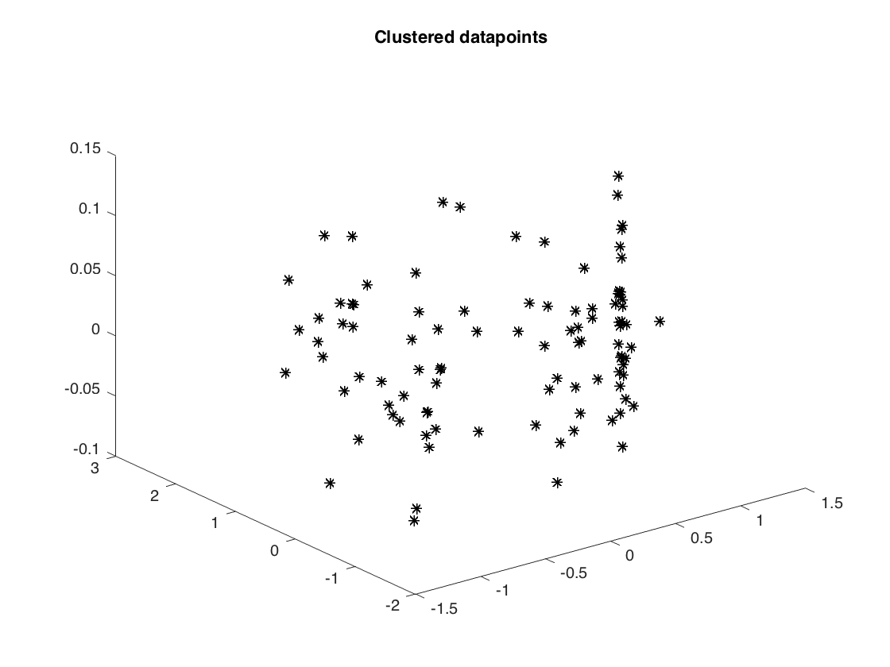
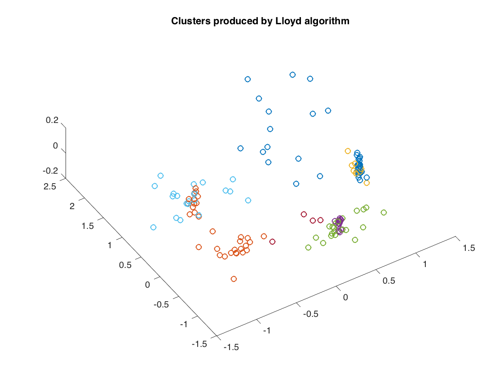
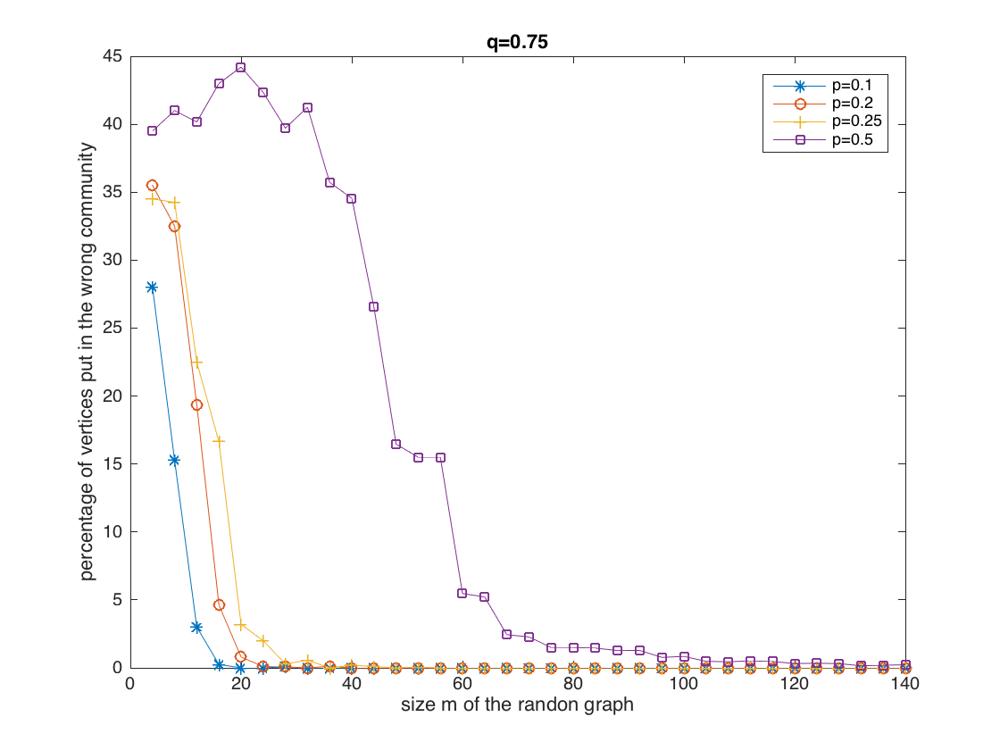

Contents
- Illustration of single-linkage and Lloyd's algorithm
- generate clustered data
- naive implementation of the single-linkage algorithm
- naive implementation of Lloyd's algorithm
- Illustration of spectral clustering
- generate two communites and their connections with the stochastic block model
- Cluster according to the leading eigenvector of W - delta*ones(n,n)
- There seems to be no errors at all when m is large enough!
%%%%%%%%%%%%%%%%%%%%%%%%%%%%%%%%%%%%%%%%%%% % Computational illustration for Chapter 07 % Clustering % %%%%%%%%%%%%%%%%%%%%%%%%%%%%%%%%%%%%%%%%% clear all; clc;
Illustration of single-linkage and Lloyd's algorithm
generate clustered data
k = 5; % number of clusters M = randi(25,1,k); % numbers of datapoints per cluster m = sum(M); % total number of datapoints X = []; % dxm matrix to hold the datapoints (d=3) for h = 1:k center_h = [cos(2*pi/k*h); sin(2*pi/k*h); .05*rand]; radius_h = rand/k; X_h = [center_h(1) + radius_h*randn(1,M(h));... center_h(2) + radius_h*randn(1,M(h)); center_h(3) + .05*randn(1,M(h))]; X = [X X_h]; end % shuffle the datapoints X = X(:,randperm(m)); % store all pairwise distances into a matrix dist = zeros(m,m); for i=1:m for j=1:m dist(i,j) = norm(X(:,i)-X(:,j)); end end % visualize the original clusters figure(1) plot3(X(1,:),X(2,:),X(3,:),'*k') title('Clustered datapoints')
naive implementation of the single-linkage algorithm
partition_sl = eye(m); % its columns will hold the clusters for t=0:m-k-1 d = inf(m-t); % matrix of distances between clusters for i=1:m-t-1 C_i = find(partition_sl(:,i)); for j=i+1:m-t C_j = find(partition_sl(:,j)); aux = min(min(dist(C_i,C_j))); d(i,j) = aux; d(j,i) = aux; end end [~,j] = min(min(d)); [~,i] = min(d(:,j)); partition_sl(:,i) = partition_sl(:,i)+partition_sl(:,j); % merge C_i, C_j partition_sl(:,j) = []; % remove C_j end % visualize the ouputted clusters figure(2) for h=1:k C_h = find(partition_sl(:,h)); plot3(X(1,C_h),X(2,C_h),X(3,C_h),'+'); hold on end title('Clusters produced by single linkage')

naive implementation of Lloyd's algorithm
centers = [4*rand(2,k)-2; zeros(1,k)]; % dxk matrix to holds the centers (d=3) partition_l = zeros(m,k); % its columns will hold the clusters n_iters = 100; % number of iterations for t=1:n_iters dist = zeros(k,m); % to hold all datapoint-center distances for h=1:k for i=1:m dist(h,i) = norm(X(:,i)-centers(:,h)); end end [~,aux] = min(dist); for h=1:k C_h = find(aux==h); % the h-th cluster as a set partition_l(:,h) = (aux==h); % the h-th cluster as a 0/1-vector if length(C_h) > 0 centers(:,h) = sum(X(:,C_h),2)/length(C_h); % the h-th center end end end % visualize the ouputted clusters figure(3) for h=1:k C_h = find(partition_l(:,h)); plot3(X(1,C_h),X(2,C_h),X(3,C_h),'o'); hold on end title('Clusters produced by Lloyd algorithm')
Illustration of spectral clustering
generate two communites and their connections with the stochastic block model
m = 500; perm = randperm(m); comm1 = sort(perm(1:m/2)); comm2 = sort(perm(m/2+1:m)); % define an auxiliary 0/1-matrix whose entries = 1 w.proba=p p = 1/4; aux1 = (rand(m/2,m/2)<p); % define an auxiliary 0/1-matrix whose entries = 1 w.proba=q q = 3/4; aux2 = (rand(m/2,m/2)<q); aux2l = tril(aux2) - diag(diag(aux2)); aux2u = triu(aux2) - diag(diag(aux2)); % define the random adjacency matrix W W = zeros(m,m); W(comm1,comm1) = aux2l+aux2l'; W(comm1,comm2) = aux1; W(comm2,comm1) = aux1'; W(comm2,comm2) = aux2u+aux2u';
Cluster according to the leading eigenvector of W - delta*ones(n,n)
delta=sum(sum(W))/m^2; [V,~] = eigs(W-delta*ones(m,m),1); comm1_sp = find(V(:,1)>0)'; comm2_sp = find(V(:,1)<=0)'; % determine the percentage of errors made n1 = length(intersect(comm1,comm1_sp))+length(intersect(comm2,comm2_sp)); n2 = length(intersect(comm1,comm2_sp))+length(intersect(comm2,comm1_sp)); disp(strcat('Percentage of errors:', 32, num2str(100*min(n1,n2)/m), 37))
Percentage of errors: 0%
There seems to be no errors at all when m is large enough!
Empirical estimation of the error percentage depending on m, p, and q
clear all; clc; % parameters for the range of values of m to be tested m_min = 4; m_max = 140; m_inc = 4; % number of random trials performed for a given m nb_trials = 50; % fix one value of q and consider several values of p q = 3/4; p_values = [1/10, 1/5, 1/4, 1/2]; % matrix to store the percentage of errors nb_errors = zeros( 1+(m_max-m_min)/m_inc ,length(p_values) ); % loop reproducing the above code for j=1:length(p_values) for m = m_min:m_inc:m_max err = 0; for t=1:nb_trials perm = randperm(m); comm1 = sort(perm(1:m/2)); comm2 = sort(perm(m/2+1:m)); aux1 = (rand(m/2,m/2)<q); aux1u = triu(aux1) - diag(diag(aux1)); aux1l = tril(aux1) - diag(diag(aux1)); aux2 = (rand(m/2,m/2)<p_values(j)); W=zeros(m,m); W(comm1,comm1) = aux1l+aux1l'; W(comm1,comm2) = aux2; W(comm2,comm1) = aux2'; W(comm2,comm2) = aux1u+aux1u'; delta = sum(sum(W))/m^2; [V,~] = eigs(W-delta*ones(m,m),1); comm1_sp = find(V(:,1)>0)'; comm2_sp = find(V(:,1)<=0)'; err = err + min(... length(intersect(comm1,comm1_sp))+length(intersect(comm2,comm2_sp)),... length(intersect(comm1,comm2_sp))+length(intersect(comm2,comm1_sp))); end nb_errors(1+ (m-m_min)/m_inc,j) = err/(nb_trials*m); end end % visualize the results figure(4) plot(m_min:m_inc:m_max,100*nb_errors(:,1),'-*',... m_min:m_inc:m_max,100*nb_errors(:,2),'-o',... m_min:m_inc:m_max,100*nb_errors(:,3),'-+',... m_min:m_inc:m_max,100*nb_errors(:,4),'-s'); title(strcat('q=',num2str(q))); xlabel('size m of the random graph'); ylabel('percentage of vertices put in the wrong community'); legend(strcat('p=',num2str(p_values(1))),... strcat('p=',num2str(p_values(2))),... strcat('p=',num2str(p_values(3))),... strcat('p=',num2str(p_values(4))));